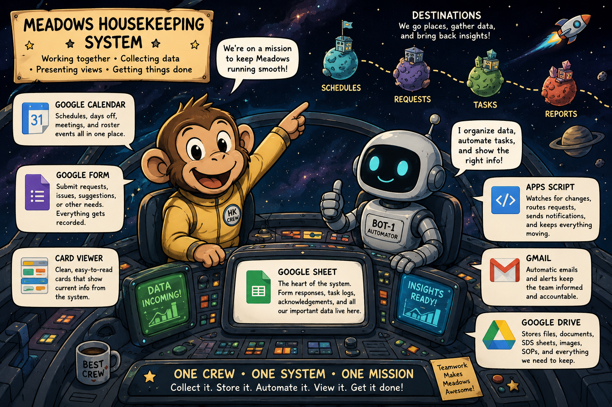

Website
The main interface where the supervisor can see the calendar, open forms, and use embedded viewers.
A connected set of Google tools that provides one clear interface for schedules, requests, acknowledgements, records, documents, and communication.

The drawing separates the system into three major responsibilities: what users see, where information is stored, and what happens automatically.
The website serves as the front door. Google Drive contains the records and files. Apps Script connects the pieces, routes information, sends notifications, and records acknowledgements.
Each Google service performs a specific job while contributing to one coordinated workflow.
The main interface where the supervisor can see the calendar, open forms, and use embedded viewers.
Displays the daily roster, future assignments, days off, meetings, and other scheduled events.
Collects requests and other structured information without requiring users to understand the underlying system.
Stores form responses and becomes the organized historical record of requests, actions, and outcomes.
Holds supporting files such as documentation, reports, images, SOPs, SDS sheets, and archived records.
Reads stored information, sends notifications, routes requests, and records acknowledgement activity.
Delivers notifications between the supervisor and employee. It is the messenger rather than the permanent archive.
Transforms raw spreadsheet rows into clear, readable cards that can be embedded directly in the website.
Provide structured formats that allow information to be exported, transformed, compared, and reused by other utilities.
A request moves through the system in a clear sequence.
The colored containers in the drawing show different system boundaries.
This is the presentation layer—the part users intentionally interact with.
This is the storage layer—the department's growing digital memory.
This is the action layer that connects stored information to communication.
The dashed lines represent logical associations and information exchange rather than physical connections.
| Relationship | Meaning |
|---|---|
| Website → Google Calendar | The calendar is embedded or linked so the supervisor can see scheduling information from the main site. |
| Website → Google Form | The site gives users a simple place to submit structured requests. |
| Google Form → Google Sheet | Every submission becomes a timestamped row in the response sheet. |
| Google Sheet → Apps Script | Scripts read new records and perform routing, notification, or transformation tasks. |
| Apps Script → Gmail | The script sends notices to the appropriate supervisor or employee. |
| Apps Script → Card Viewer | Stored records are translated into readable cards rather than exposing raw spreadsheet rows. |
| Google Drive → Entire System | Drive provides the shared storage environment that holds documents, files, spreadsheets, and supporting records. |
The immediate result is easier communication. The long-term result is a reliable operational history.
Requests reach the employee through one consistent process and can be acknowledged promptly.
The supervisor can determine whether a request has been received without relying on repeated texts or verbal follow-up.
Each form submission, notification, acknowledgement, and status change becomes part of a searchable history.
CSV and JSON formats allow the same records to support reports, viewers, comparisons, and future utilities.
The system preserves evidence of work and decisions that would otherwise disappear into texts, paper, or memory.
New functions can be added without replacing the current system because each component has a defined responsibility.
The website is the front door, Google Drive is the memory, and Apps Script is the machinery that moves information between people and services.